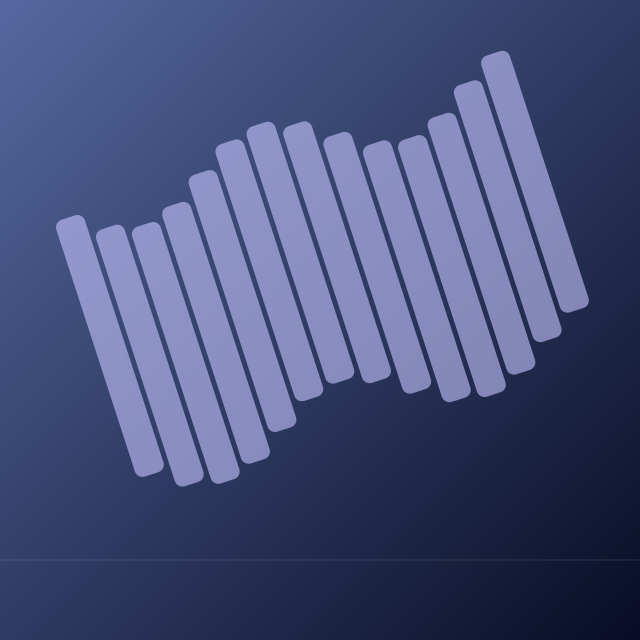
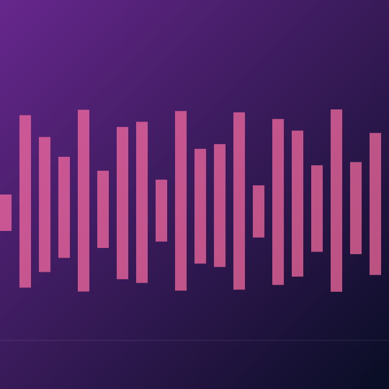
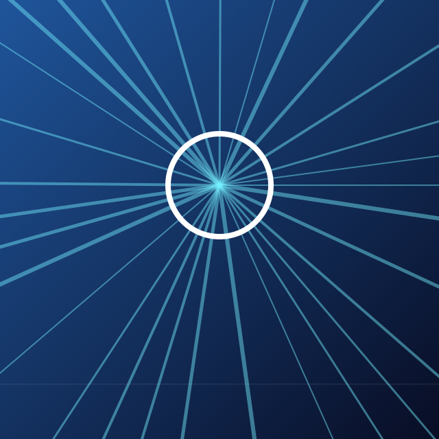
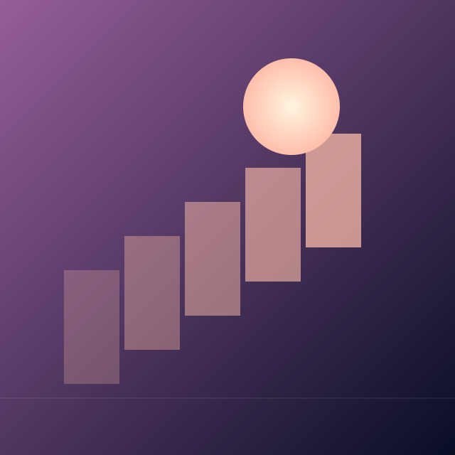
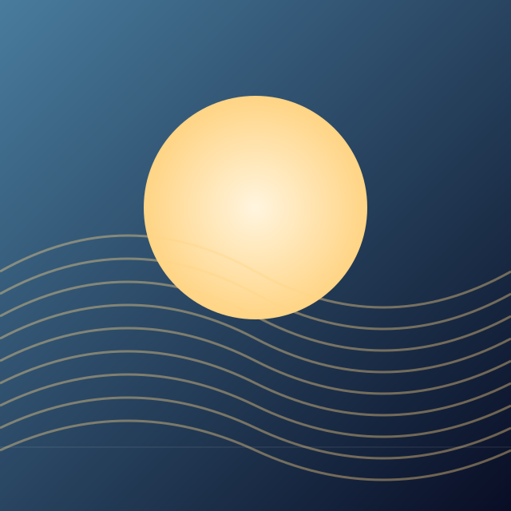
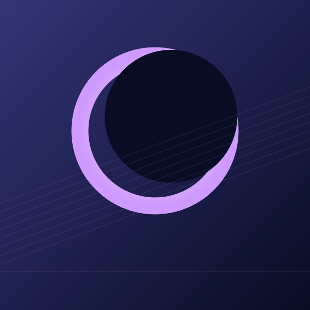
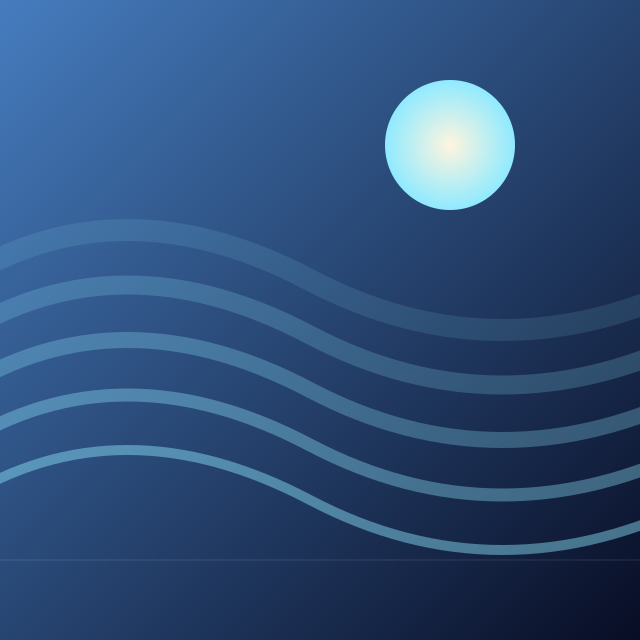

Afterglow Ascent127.09초 · 추정 128.4 BPM · v35 연결부 재편집연결 1 앞뒤 12초원곡 구간게임 구간00:00.000 → 01:24.28000:00.000 → 01:24.28002:40.787 → 03:23.60001:24.280 → 02:07.094
Ivory Daydream120.60초 · 추정 126 BPM · v36 연결부 재편집연결 1 앞뒤 12초원곡 구간게임 구간00:00.000 → 01:00.94300:00.000 → 01:00.94302:09.508 → 03:09.16001:00.943 → 02:00.596
Bassline Riot133.56초 · 추정 180 BPM연결 1 앞뒤 12초원곡 구간게임 구간00:00.000 → 01:05.97400:00.000 → 01:05.97402:19.976 → 03:27.56001:05.974 → 02:13.558
Photon Rush128.43초 · 추정 148 BPM연결 1 앞뒤 12초원곡 구간게임 구간00:00.000 → 01:17.09900:00.000 → 01:17.09902:41.826 → 03:33.16001:17.099 → 02:08.433
한 칸 더 가까이124.68초 · 추정 163.1 BPM연결 1 앞뒤 12초원곡 구간게임 구간00:00.000 → 01:19.85200:00.000 → 01:19.85201:57.048 → 02:41.88001:19.852 → 02:04.685
내일의 우리에게130.69초 · 추정 128.7 BPM연결 1 앞뒤 12초원곡 구간게임 구간00:00.000 → 01:22.15700:00.000 → 01:22.15703:17.465 → 04:06.00001:22.157 → 02:10.692
Neon Eclipse125.69초 · 추정 190.2 BPM연결 1 앞뒤 12초원곡 구간게임 구간00:00.000 → 01:01.33500:00.000 → 01:01.33502:07.245 → 03:11.60001:01.335 → 02:05.690
Open Blue Sky118.94초 · 추정 150 BPM연결 1 앞뒤 12초연결 2 앞뒤 12초원곡 구간게임 구간00:00.000 → 00:51.36700:00.000 → 00:51.36702:09.589 → 02:47.19400:51.367 → 01:28.97202:59.995 → 03:29.96001:28.972 → 01:58.937